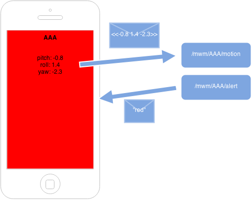
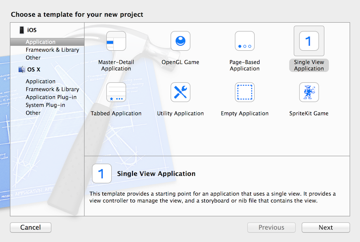
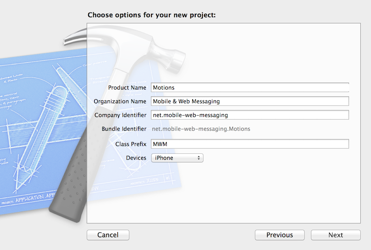
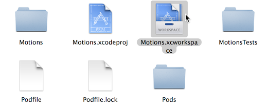
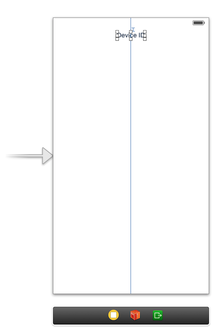
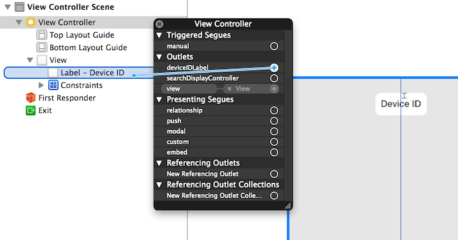
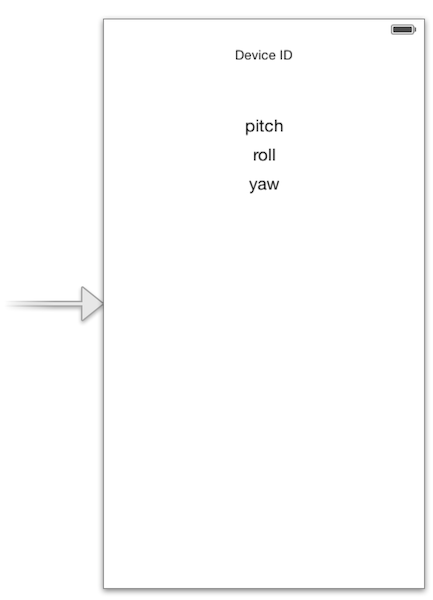
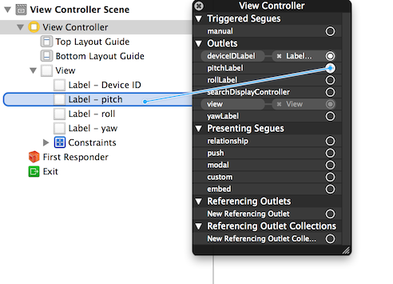
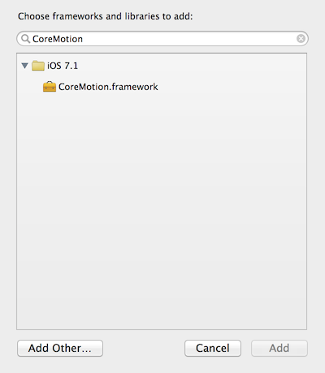
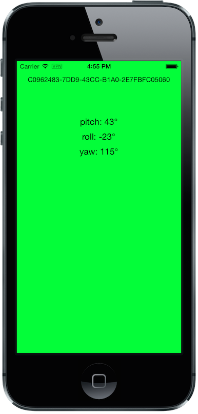

In this chapter, we will write an iOS application using the MQTTKit library to send and receive messages using the MQTT protocol.
In #ch_introduction_mqtt_example, we described the Motions application (). In this chapter, we will write the iOS application that broadcasts the device motion data and receives alert messages.

Diagram of the Motions iOS application
Throughout the chapter, we will show all the code required to run the application.
The whole application code can be retrieved from the GitHub repository in the mqtt/ios/ directory.
MQTTKit
This book uses the MQTTKit library for iOS (and Mac OS X) applications. It is a modern Objective-C library that uses ARC and blocks to write messaging clients in a simple fashion. It is based on the Mosquitto project that provides a lower-level C implementation of MQTT.
The source code of this library project is hosted on GitHub.
Create the Motions Project with Xcode
We will use Xcode to create the Locations iOS application.
Once Xcode is installed and started, we select "Create a new Xcode project" from its launch screen. The application will be composed of a single view, so we select the Single View Application template in iOS → Application from the template screen, as illustrated in .

Select Single View Application from the template screen
We will call the project Motions and select to build it only for iPhone devices, as illustrated in .

XCode project options screen
Finally, we will save it in a folder on our machine.
Create the Podfile
We will again use CocoaPods to manage the project dependencies (as explained in #ch_mobile_stomp_cocoapods for the STOMP example).
We close Xcode because CocoaPods will modify the project settings to import the dependencies.
We create a file named Podfile at the root of the project (in the same directory as Motions.xcodeproj). See .
The Motions's application
xcodeproj 'Motions.xcodeproj'
pod 'MQTTKit', :git => 'https://github.com/mobile-web-messaging/MQTTKit.git'
platform :ios, '5.0'
After saving this file, run the pod install command, shown in .
Install Motions dependencies
$ pod install
Analyzing dependencies
Pre-downloading: `MQTTKit` from `https://github.com/mobile-web-messaging/MQTTKit.git`
Downloading dependencies
Installing MQTTKit (0.1.1)
Generating Pods project
Integrating client project
[!] From now on use `Motions.xcworkspace`.
We can now open Xcode again, but we must do it using the workspace file named Motions.xcworkspace, and not the project file named Motions.xcodeproj ().

Open the workspace file
First, we will verify that the project is set up correctly and that the application can run in the iOS simulator.
We will simulate the latest iPhone devices by selecting Product → Destination → iPhone Retina (4-inch 64-bit) from Xcode menubar.
If we run the application by selecting Product → Run (or pressing ⌘+R), the iOS simulator starts and opens the application, which is composed of a blank view. This confirms that the project and its dependencies are successfully compiled and launched.
We will generate a unique identifier for the iOS device and display it in the view.
Click on Main.storyboard to open it. From the Object library, drag a Label on the View's window. Place it at the top of the view and change the text to "Device ID," as shown in .

Add the Device ID label
We will again change its Font to System 13.0 and its Alignment to centered to fit the screen.
This label will be connected to a deviceIDLabel outlet property defined in the MWMViewController private interface in the MWMViewController.m file.
We also add a deviceID string to store the device identifier:
Open the Main.storyboard and control-click on View Controller to see its connection panel. Drag from deviceIDLabel to the UILabel to connect it. See .

Connect the deviceIDLabel outlet property to the device ID UILabel
The device identifier is generated in the MWMViewController implementation when the view is loaded and stored in the deviceID property. We also set the deviceIDLabel's text to this identifier:
The device motion will be identified using the pitch, roll, and yaw values.
To have some graphical feedback as we move the device, we will add three UILabels that show these three values.
Click on Main.storyboard to open it. From the Object library, drag three Labels on the View's window below the Device ID label. Change their respective text to "pitch," "roll," and "yaw," as illustrated in .

Add three labels to display the device’s pitch, roll, and yaw values
We create three outlet properties in the MWMViewController private interface for these labels:
The next step is to connect the three labels in the Main.storyboard to these three outlet properties:
Open the Main.storyboard and control-click on View Controller to see its connection panel. Drag from its pitchLabel property to the corresponding pitch UILabel to connect it (see ).

Connect the pitchLabel outlet property to the pitch UILabel
Repeat this operation for the rollLabel and yawLabel to connect them.
At this stage, the graphical objects are connected and we can capture the device motion to update these labels and then broadcast the motion data using MQTT.
Capture the Device Motions with CoreMotion Framework
iOS provides the CoreMotion framework to capture the motion of the devices.
We need to add it to the libraries linked by the application. Click on the Motions project and then the Motions target. In the General tab, under the Linked Frameworks and Libraries section, click on the + button. In the selection window, type "CoreMotion," select the CoreMotion.framework, and click on the Add button.

Add the CoreMotion framework
We can now use the CoreMotion framework by importing CoreMotion/CoreMotion.h at the top of the MWMViewController.m file.
We will also define a motionManager property in MWMViewController private interface to use CoreMotion:
This motionManager is used to capture the device motions. We must create a new CMMotionManager, specify the interval of update and call its startDeviceMotionUpdatesToQueue:withHandler: method to get the device motion
periodically in a block. We create a new NSOperationQueue to receive these updates on this queue.
The device motion is represented by a CMDeviceMotion object. In our example, we are interested only by its attitude property that contains the pitch, roll, and yaw value we want to broadcast. Their values are expressed in radians, so we will convert them in degrees to display them.
The block to receive motion update is executed on the NSOperationQueue we have created, so we cannot update the UILabel from it. We must instead create another block and call dispatch_async to execute the graphical changes on the UI main queue (that is retrieved by calling dispatch_get_main_queue()).
All this logic can be written in viewDidLoad so that the motion manager will start receiving updates when the view is loaded:
We also need to notify the motionManager that we no longer want to receive updates when the view is no longer used. We need to call its stopDeviceMotionUpdates method inside the view controller’s dealloc method:
At this stage, if you run the Motions application on your iPhone and move it, the pitch, roll, and yaw labels will be updated to reflect the changes in the device motions ().
The motion values change when the device moves
The iOS Simulator is not able to simulate device motions. If you run the Motions application in the simulator, the motionManager will not send any device motions updates. At the time of writing this book, the only way to test this code is to run the application on a real iOS device.
We now capture the device motions and display them. The next step is to broadcast them by sending MQTT messages.
Create an MQTT Client with MQTTKit
To send and receive message with MQTT, we must first import the MQTTKit library that was added to the project using CocoaPods at the beginning of this chapter.
We must import its header file MQTTKit.h at the top of the MWMViewController.m file and add an MQTTClient property named client to the MWMViewController private interface.
We also define a constant to represent the hostname of the MQTT broker we are using iot.eclipse.org:
We will create a new MQTTClient object in the MWMViewController's viewDidLoad method.
An MQTTClient must be uniquely identified for the MQTT brokers it connects to.
We can use the deviceID as its client identifier:
An MQTTKit client will connect to the MQTT Broker when its connectToHost:completionHandler: method is called. MQTTKit is event-driven, so the client will be effectively connected when its completionHandler block is called and the return code MQTTConnectionReturnCode is equal to ConnectionAccepted.
You cannot assume that the client is connected when the connectToHost:completionHandler: method returns. Any actions that require the client to be connected must happen inside the completionHandler block.
We will encapsulate this code in a connect method:
#pragma mark - MQTTKit Actions
- (void)connect
{
NSLog(@"Connecting to %@...", kMqttHost);
[self.client connectToHost:kMqttHost
completionHandler:^(MQTTConnectionReturnCode code) {
if (code == ConnectionAccepted) {
NSLog(@"connected to the MQTT broker");
} else {
NSLog(@"Failed to connect to the MQTT broker: code=%lu", code);
}
}];
}
We will call this method from viewDidLoad to connect to the MQTT broker as soon as the view is loaded:
The MWMViewController automatically connects to the MQTT broker when its view is loaded and disconnects when it is deallocated. The next step is to send messages every time the device motion values are updated.
The MQTT protocol is a binary protocol. The message payload must be encoded as binary data to be sent.
The MQTTKit library provides two methods to send messages:
The publishData:toTopic:withQos:retain: method expects an NSData object as the message payload and its bytes will be used.
The publishString:toTopic:withQos:retain: method can also be used for the common case of sending a text message. Internally, the NSString that is passed in parameter is encoded as an NSData using the UTF-8 encoding.
In the Motions iOS application, we send a message with a binary payload composed of three 64-bit floats for the pitch, roll, and yaw values contained in a CMAttitude object. We will build the payload’s NSData by converting the double values to a platform-independent format using the CFConvertDoubleHostToSwapped function.
The other three parameters to the publish… methods are the same for both the binary and text payload version.
The topic parameter is the name of the topic to send the message.
According to #ch_introduction_mqtt_example_topology, the name of the topic is /mwm/XXX/motion where "XXX" is the device identifier.
The qos parameter corresponds to the Quality of Service (or QoS) to use to deliver the messages to the consumers.
Quality of Service
The MQTT protocol defines three levels of Quality of Service:
At Most Once (with the value 0 represented by AtMostOnce in MQTTKit)
At Least Once (with the value 1 represented by AtLeastOnce in MQTTKit)
Exactly Once (with the value 2 represented by ExactlyOnce in MQTTKit)
These levels of QoS determine the guarantee that the MQTT broker will accept to deliver a message.
With At Most Once, the MQTT broker guarantees that the published message will be delivered at most once to its consumers. This means that the consumers may not receive the message at all. If an error (such as a network failure or a crash) occurs while the message is sent to the broker, it is possible that it will be lost and the consumers will never receive it.
With At Least Once, the MQTT broker guarantees that the published message will be delivered at least once to the consumers. This also means that a consumer may receive the same message twice. If there is an error when the producer sends the message to the broker and a message acknowledgment has not been received, it will resend it a second time as a duplicate (the MQTT message will have a DUP bit set). When the broker receives this duplicate message it will redeliver it to the consumer, but it is possible that they in fact received the original message. The consumer may need to check if the DUP bit is set on the delivered message to know whether it is an original message (and it must process it) or a duplicate (and it can discard it).
The At Least Once QoS offers the guarantee that no published message will be lost, but at the cost of performance and additional code on the consumer side.
The performance cost is caused by the additional message (a PUBACK message) sent from the broker to the client to acknowledge that it has received the published message. That means that using this QoS level to publish N messages will involve exchanging 2*N messages between the producer and the broker.
The highest level of delivery is provided using the Exactly Once QoS. With that level, the MQTT broker guarantees that the published message will be delivered exactly once by the consumers. There will be no lost messages or duplicate messages. This is guaranteed by additional exchange of messages between the producer and broker (PUBREC, PUBREL, PUBCOMP messages).
That means that using this QoS level to publish N messages will involve exchanging 4*N messages, requires four times more network trips than the lowest level of QoS of At Most Once and twice more than the At Least Once level.
Choosing the correct QoS depends on the type of message exchanged and the importance of its payload.
In the Motions iOS application, the published message contains device motion that is updated every second. It is acceptable if a published message is lost because a new message with updated content will be sent just one second after. Using the AtMostOnce QoS is the best choice for this type of message.
All the complexities of using a higher level of QoS is transparent from the application using MQTT, as it is the responsibility of the client library to handle it. However, you need to be aware of the cost associated with using these QoS, as they can have significant impact on your application performance and the device in general (as the additional network trips will drain the battery life).
Retained Message
The final parameter of the publish… methods is a boolean to specify whether the published message must be retained by the topic.
If this flag is set on the message, the broker will deliver the message to its subscribers and keep holding the message. If a new consumer subscribes to this topic, the broker will deliver the retained message to it. This is useful, as the new subscriber will not have to wait for a publisher to send a message to receive new data. The retained message contains the Last Known Good value.
In our case, we will publish messages with retain set to YES. If consumers subscribe to the device motion topic after the device stops updated its motion values, they will still be able to use the last known device motion value.
This example is a bit of a stretch. A more interesting example would be an application broadcasting its location (similar to the Locations application). Using retained message would allow the consumers to know the last known position of the device before it stops broadcasting its position.
To sum up, the Motions application will send a message:
With a binary payload composed of three 64-bit floats for the device’s pitch, roll, and yaw values
To the device motion topic /mwm/XXX/motion where XXX is the device identifier
With a QoS of AtMostOnce, because we accept that a published message may not be delivered
With retain set to YES so that the broker will retain the Last Known Good message to deliver it to new subscribers.
We will encapsulate this code in a send: method taking a CMAttitude parameter:
The message will contain the motion values in radians. It will be up to the consumers to convert them in degrees if necessary.
Finally, the last step is to call this method every time a device motion value is updated by the motionManger. This occurs in the viewDidLoad method inside the handler block passed to the motionManger's startDeviceMotionUpdatesToQueue:withHandler: method:
We now have the Motions iOS application that is sending MQTT messages. How can we check that this is working as expected?
Conversely to STOMP, MQTT is a binary protocol and we cannot use a simple telnet client to create a consumer and receive messages sent by the application.
However, the Mosquitto broker provides a simple command-line tool to send and receive message from an MQTT broker. #appendix_mosquitto explains how to download and install the Mosquitto broker. After it is done, we can use its mosquitto_sub command-line tool to connect to an MQTT broker (hosted at iot.eclipse.org) and subscribe to the device motion topic (in my case, /mwm/C0962483-7DD9-43CC-B1A0-2E7FBFC05060/motion, you will have to replace it using your own device identifier).
This tool will display the message payload. We are sending binary payload, so we will pipe the command into the hexdump tool to display the hexadecimal representation of the binary payload:
This confirms that the Motions application is effectively publishing MQTT messages.
Receive MQTT Messages
As described in #ch_introduction_mqtt_example, the Motions iOS application is also a consumer from the topic /mwm/XXX/alert. When it receives a message from this topic, it must change its background color to "alert" the user.
Let’s write the method that alert the user by changing the background color first. This warnUser: method takes an NSString parameter that should correspond to a color. Using UIKit animations, we will:
Animate the controller’s view to change its background color from its original color to the one created from the NSString parameter.
Wait two seconds after the first animation is completed to revert back to the original background color:
# pragma mark - UI Actions
// Warn the user by changing the view's background color to the specified color during 2 seconds
- (void)warnUser:(NSString *)colorStr
{
// keep a reference to the original color
UIColor *originalColor = self.view.backgroundColor;
[UIView animateWithDuration:0.5
delay:0.0
options:0
animations:^{
// change it to the color passed in parameter
SEL sel = NSSelectorFromString([NSString stringWithFormat:@"%@Color", colorStr]);
UIColor* color = nil;
if ([UIColor respondsToSelector:sel]) {
color = [UIColor performSelector:sel];
} else {
color = [UIColor redColor];
}
self.view.backgroundColor = color;
}
completion:^(BOOL finished) {
// after a delay of 2 seconds, revert it to
// the original color
[UIView animateWithDuration:0.5
delay:2
options:0
animations:^{
self.view.backgroundColor = originalColor;
}
completion:nil];
}];
}
To consume messages from an MQTT broker, the client must do the following:
Subscribe to its topic of interest.
Set its messageHandler property, which will be called every time a message is delivered.
Note that you can subscribe to many topics from the client but it has only one messageHandler property. If the client is subscribed to different topics, its messageHandler must determine which topic the message is consumed from.
Subscription
The Motions application will subscribe to its device alert topic /mwm/XXX/alert by calling the method subscribe:withQos:completionHandler: on its client property.
The first parameter is the device alert topic. We will define it at the top of the MWMViewController.m file:
#define kAlertTopic @"/mwm/%@/alert"
The subscribe:withQos:completionHandler: method takes a qos parameter that corresponds to the level of quality of service at which the consumer wants to recieve messages from the topic.
The completion handler will be called when the client is effectively subscribed to the topic. The handler has a grantedQos parameter that corresponds to the effective quality of service. The producer is responsible for determining the maximum quality of service that a message can be delivered at, but the consumer can decide to downgrade the quality of service according to its usage.
For example, a producer may publish a message with a QoS of ExactlyOnce, but a consumer may decide that it is acceptable for it if there are message duplicates and downgrade its QoS to At Least Once.
In our case, we will request to have messages delivered with a qos set to AtLeastOnce, as we do not want to lose messages but can accept duplicate messages:
We will subscribe to the alert topic as soon as the client is connected to the MQTT broker by calling this subscribe method from inside the completionHandler in the connect method:
- (void)connect
{
NSLog(@"Connecting to %@...", kMqttHost);
[self.client connectToHost:kMqttHost
completionHandler:^(MQTTConnectionReturnCode code) {
if (code == ConnectionAccepted) {
NSLog(@"connected to the MQTT broker");
[self subscribe];
} else {
NSLog(@"Failed to connect to the MQTT broker: code=%lu", code);
}
}];
}
Unsubscription
To unsubscribe from a topic and stop receiving messages from it, we will call the unsubscribe:withCompletionHandler: method of the client where the first parameter is the topic to unsubscribe from (the alert topic in our case).
The second parameter is a completion handler that is called back when the client has been acknowledged by the server that it is effectively unsubscribed.
We do not have any need for this information so we just pass nil as the handler:
Because we disconnect just after unsubscribing, we could skip that step and just disconnect from the MQTT broker. At that moment, the MQTT broker will automatically unsubscribe the client from any topic. However, it is a good practice to explicitly unsubscribe from the subscribed topic. There are also many cases where unsubscribing may occur at a different time than the disconnection. In these cases, we cannot rely on the client disconnection to perfom the unsubscription.
Define an MQTTMessage Handler
Subscribing to a topic is the first step to receive messages with MQTTKit. The second step is to define a block that will be called every time a message is received from a subscribed topic.
The client's messageHandler property defines an MQTTMessageHandler block. This block has an MQTTMessage parameter representing the MQTT message that is deliver to the client.
The MQTTMessage interface defines four properties corresponding to the message data:
mid is a unsigned short corresponding to the message ID.
topic is the name of the topic that this message is coming from. If the client is subscribed to many topics, we must use this property to determine which topic the received message is coming from.
retained is a BOOL to check whether the message was retained (and contains the last known good value) or not (it is a fresh message).
payload is an NSData object containing the binary content of the message payload.
Because sending and receiving text message is very common, the MQTTMessage interface also defines a payloadString method that returns an NSString decoded from the message binary payload using UTF-8.
In the Motions application, we expect to receive a text payload and will use this payloadString to extract the color string from the received message.
We need to set the client's messageHandlerbefore subscribing to the alert topic so that we do not miss any alert message sent after we subscribe but before the messageHandler is defined.
We will do that in the viewDidLoad method just after creating the client instance:
- (void)viewDidLoad
{
[super viewDidLoad];
self.deviceID = [UIDevice currentDevice].identifierForVendor.UUIDString;
NSLog(@"Device identifier is %@", self.deviceID);
self.deviceIDLabel.text = self.deviceID;
...
self.client = [[MQTTClient alloc] initWithClientId:self.deviceID];
// use a weak reference to avoid a retain/release cycle in the block
__weak MWMViewController *weakSelf = self;
self.client.messageHandler = ^(MQTTMessage *message) {
NSString *alertTopic = [NSString stringWithFormat:kAlertTopic, weakSelf.deviceID];
if ([alertTopic isEqualToString:message.topic]) {
NSString *color = message.payloadString;
dispatch_async(dispatch_get_main_queue(), ^{
[weakSelf warnUser:color];
});
}
};
[self connect];
}
We extracted the color using the message payloadString method after checking that it was indeed coming from the device alert topic.
We then call the warnUser: method in a block that is run on the main queue, because it contains code related to UIKit.
To avoid a retain/release cycle between self and the messageHandler block, we need to create a weak reference of self to use it inside the block.
How can we verify that the Motions application is effectively receiving alert messages? To verify that the application was sending messages, we used the mosquitto_sub tool. We will now use the opposite tool, mosquitto_pub, to publish a message on the alert topic and verify that the application background color changes.
The mosquitto_pub can send a text payload using the -m option. We will use this option to pass the background color (in this case, green):
$ mosquitto_pub -h iot.eclipse.org -t /mwm/C0962483-7DD9-43CC-B1A0-2E7FBFC05060/alert -m green
After this message is sent, the device will receive it and change its background color to green ().

Alert message is received by the Motions iOS application
Summary
In this chapter, we learned to use MQTTKit to send and receive MQTT messages from an iOS application.
To send a message, the application must do the following:
Connect to the MQTT broker.
Send the message to the topic.
To consume a message, the application must do the following:
Connect to the MQTT broker.
Subscribe to the topic.
Define a message handler block that is called every time a message is received. This block is executed on a dispatch queue. If there is any code that changes the user interface, it must be wrapped in a block executed on the main queue.
We used two different types of message payloads:
A binary payload to send the device motions values as three 64-bit floats.
A text payload to extract a background color from the messages received on the alert topic.